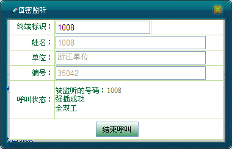
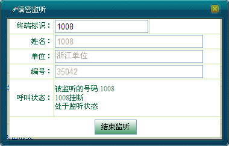
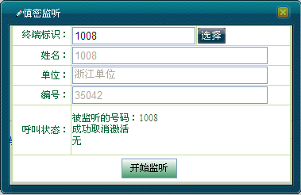
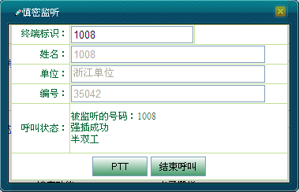
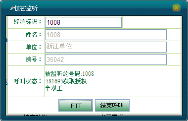
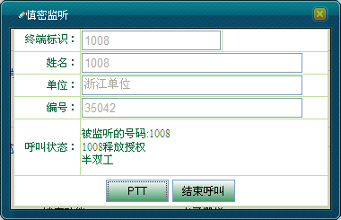
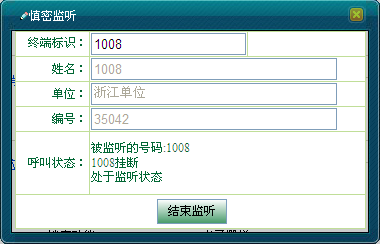

在无线用户取得话语权时，调度用户如果想获得通话权，可以单击<强插>按钮，通过抢占呼叫的方式来强行抢夺无线用户的通话权。
强插是建立在慎密监听的基础上的。调度台对某个用户进行跟踪，当该用户有满足监听要求的呼叫产生时，调度台可对该呼叫进行监听，在监听过程中对被监听呼叫进行强插。作为可选部分，强插也可以在跟踪后，满足监听要求的呼叫出现时，调度台直接对该呼叫进行强插。
强插是是断开第三方用户的呼叫，被监听用户没有任何提示，调度台与被监听用户建立呼叫，紧接着被监听用户就能够与调度台进行语音通信。
本节主要说明：
例：若用户“1007”与“1008”正在全双工通话中，同时“1008”正处于被调度员监听的状态。若调度员想与用户“1008”通话，则具体强插操作步骤如下：
1）单击＜强插＞按钮，调度员即可代替“1007”与“1008”进行全双工通话，如图1所示。

图1. 对全双工通话强插成功
2）通话完成后，调度员单击＜结束呼叫＞按钮或者用户“1008”按下挂机键结束当前全双工通话。如图2所示。

图2. 结束全双工通话
3）此时，慎密监听还未结束。若有其他呼叫产生，调度台仍旧可以监听用户“1008”。
4）当调度员单击＜结束监听＞或者再次产生的通话结束后，慎密监听结束，如图3所示。

图3. 结束慎密监听
例：若用户“1007”与“1008”正在半双工通话中，同时调度员对“1008”发起慎密监听。则调度台对其进行强插的具体操作步骤如下：
1）单击＜强插＞按钮，调度员即可代替“1007”与“1008”进行半双工通话，如图4所示。

图4. 对半双工通话强插成功
2）调度台按住＜PTT＞获取授权发送语音信息，如图5所示。释放＜PTT＞则释放授权，用户“1008”按住PTT键获取授权，释放PTT键释放发射权，如图6所示。

图5. 调度台获取授权

图6. 1008释放授权
3）通话完成后，调度员单击＜结束呼叫＞按钮或者用户“1008”按下挂机键结束当前半双工通话，如图7所示。

图7. 结束半双工呼叫
4）此时，慎密监听还未结束。若有其他呼叫产生，调度台仍旧可以监听用户“1008”。
5）当调度员单击＜结束监听＞或者再次产生的通话结束后，慎密监听结束。
 说明：
说明：
强插只有在慎密监听开启的状态下才能进行，且强插之后不能进行强拆。
Copyright © 2012 Eastcom, Inc. All rights reserved. |
||